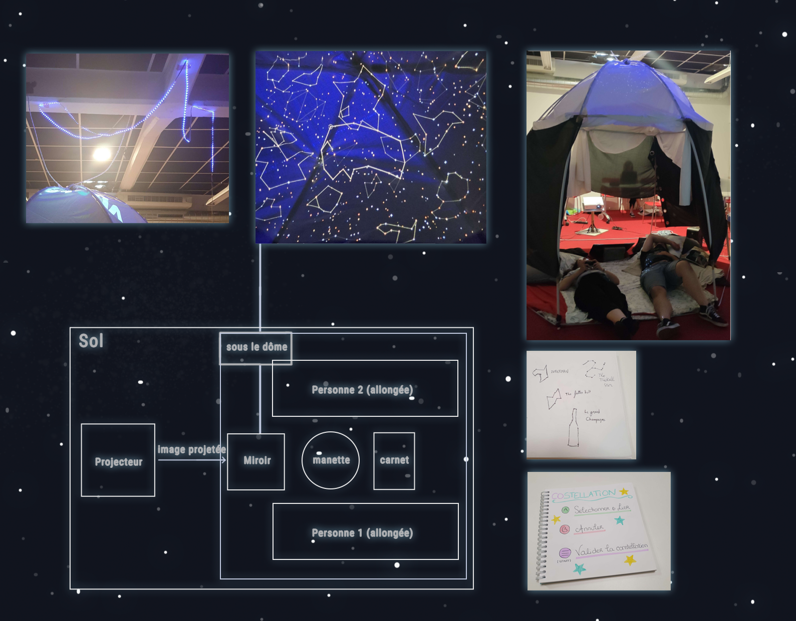
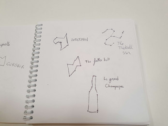

Back when I was studying at CNAM-Enjmin, we created several installations using video game technology. The two projects showcased below allowed me to work with Arduino, which I really enjoyed.
Slinghost is a project we made as a small team in 5
days as part of an accessibility workshop. The game
was designed to be playable by people with visual and audio impairments. Visual, audio and haptic
feedback guide the player to locate the ghost. The custom-made physical slingshot also has an adjustable
height, allowing people in wheelchairs to play. I mainly worked on the visual feedback with LEDs and an
Arduino board, as well as the aim feature of the slingshot.

CoStellation is the result of a three and a half
day workshop focused on creating an interactive
experience with simple inputs (a basic controller) while allowing outputs that were not limited to a
screen. The idea was for two people to stargaze together at a procedurally generated sky. With simple
inputs, players can draw constellations that remain in the sky for future stargazers to discover. We
also provided a notebook where players could name their constellations.


